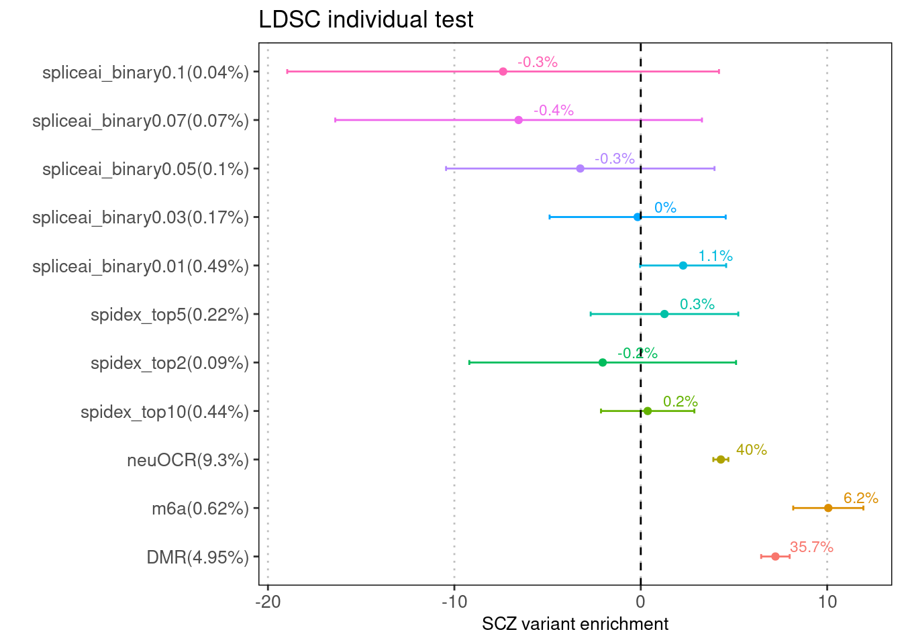
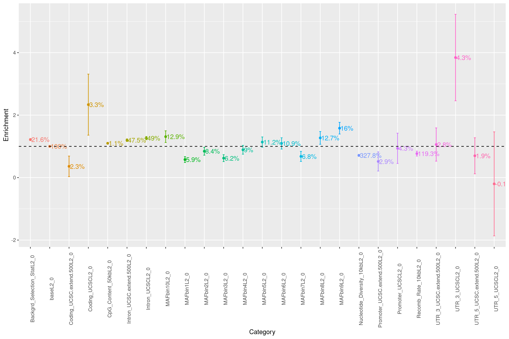
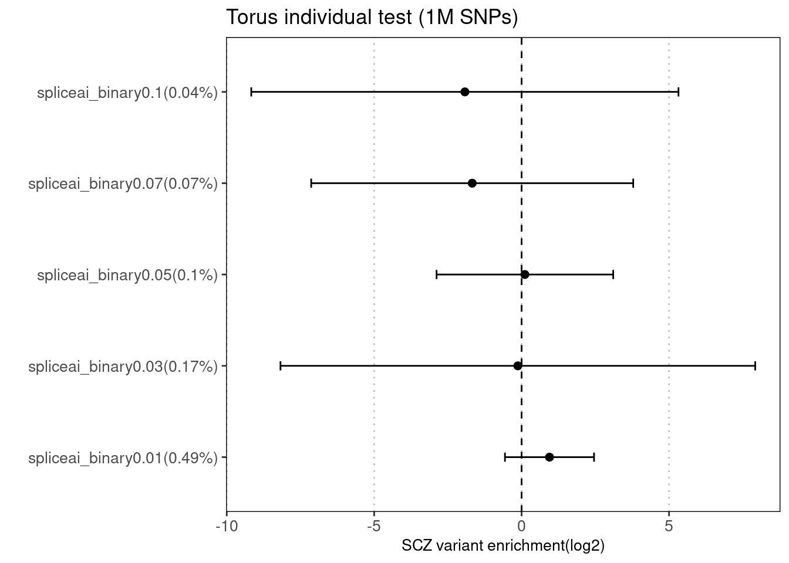
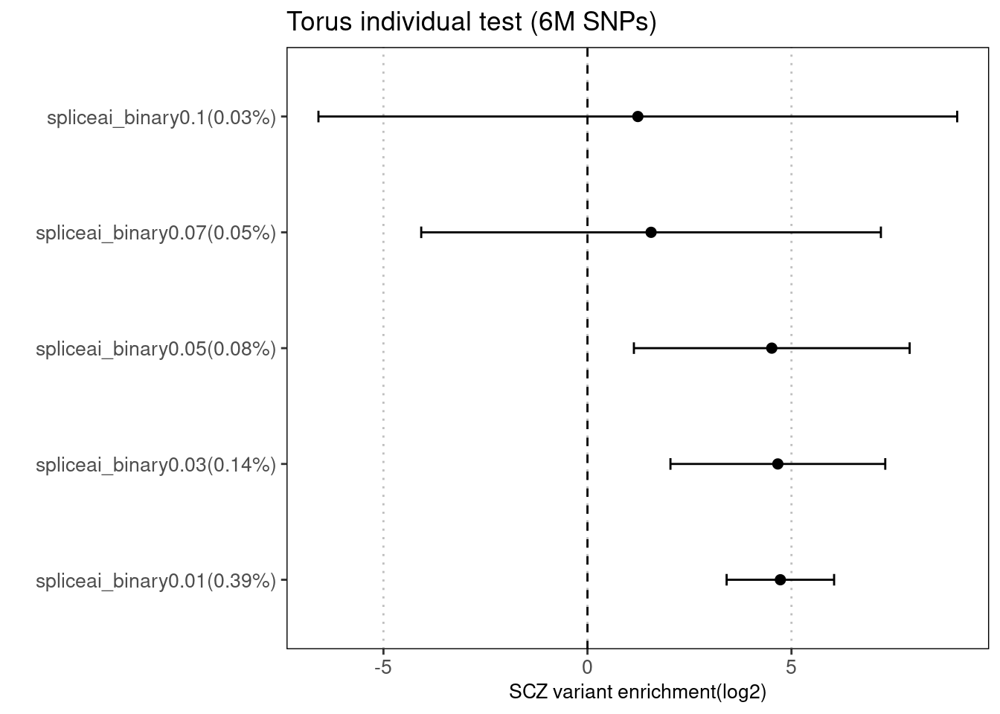
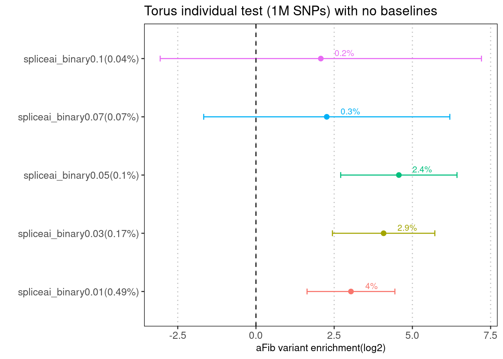
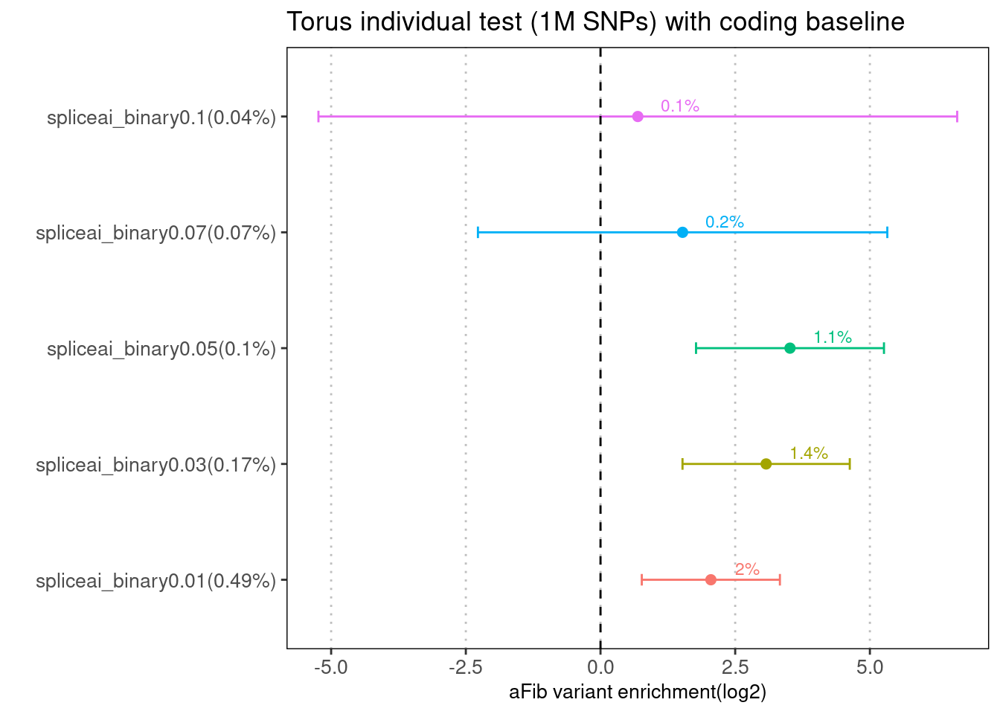
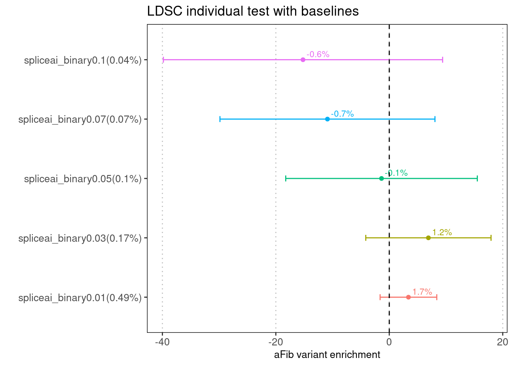
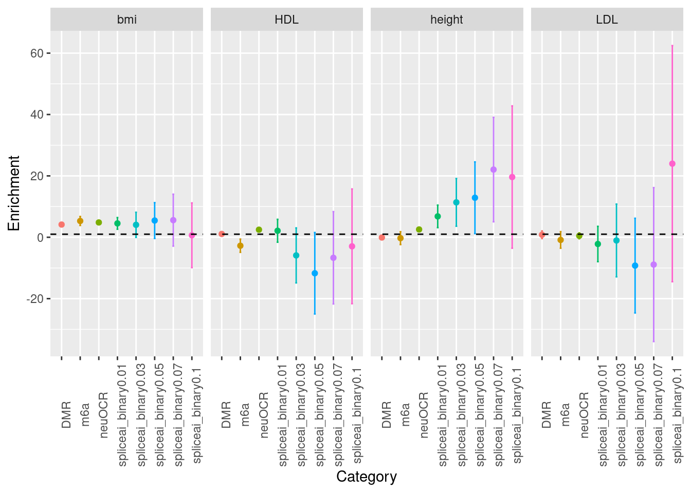
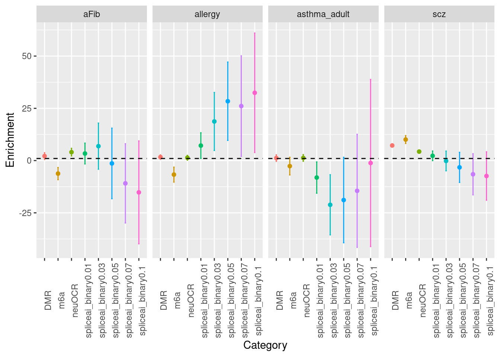
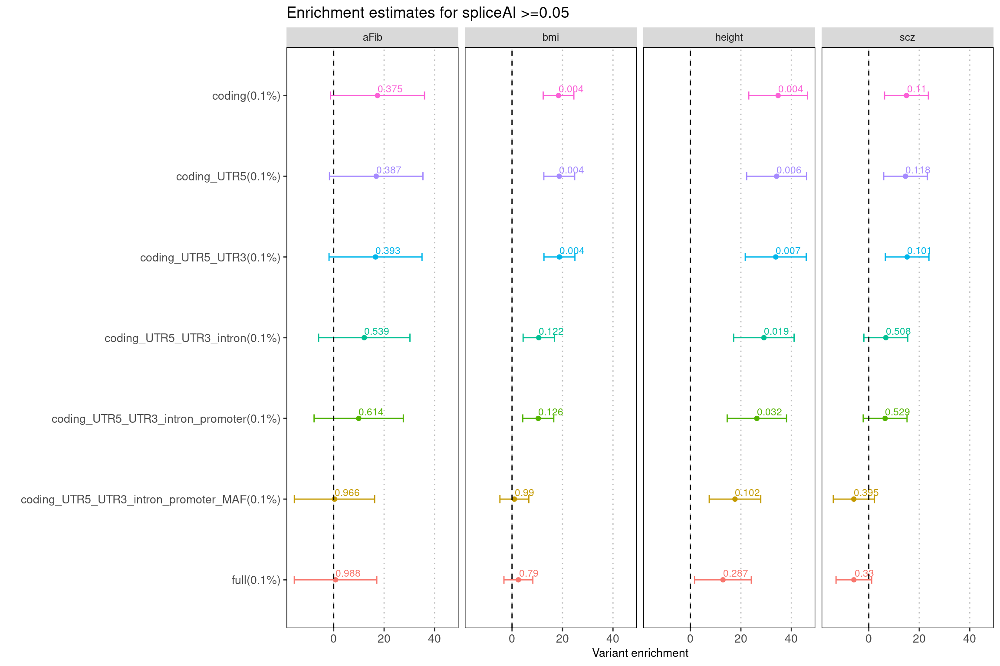

Last updated: 2022-07-15
Checks: 5 2
Knit directory: funcFinemapping/
This reproducible R Markdown analysis was created with workflowr (version 1.6.2). The Checks tab describes the reproducibility checks that were applied when the results were created. The Past versions tab lists the development history.
The R Markdown is untracked by Git. To know which version of the R Markdown file created these results, you'll want to first commit it to the Git repo. If you're still working on the analysis, you can ignore this warning. When you're finished, you can run wflow_publish to commit the R Markdown file and build the HTML.
Great job! The global environment was empty. Objects defined in the global environment can affect the analysis in your R Markdown file in unknown ways. For reproduciblity it's best to always run the code in an empty environment.
The command set.seed(20210404) was run prior to running the code in the R Markdown file. Setting a seed ensures that any results that rely on randomness, e.g. subsampling or permutations, are reproducible.
Great job! Recording the operating system, R version, and package versions is critical for reproducibility.
Nice! There were no cached chunks for this analysis, so you can be confident that you successfully produced the results during this run.
Using absolute paths to the files within your workflowr project makes it difficult for you and others to run your code on a different machine. Change the absolute path(s) below to the suggested relative path(s) to make your code more reproducible.
| absolute | relative |
|---|---|
| ~/projects/funcFinemapping/data/qqplot_SNPs_high_spliceAI_scores_allergy.png | data/qqplot_SNPs_high_spliceAI_scores_allergy.png |
| ~/projects/funcFinemapping/data/qqplot_SNPs_high_spliceAI.png | data/qqplot_SNPs_high_spliceAI.png |
Great! You are using Git for version control. Tracking code development and connecting the code version to the results is critical for reproducibility.
The results in this page were generated with repository version a6ed615. See the Past versions tab to see a history of the changes made to the R Markdown and HTML files.
Note that you need to be careful to ensure that all relevant files for the analysis have been committed to Git prior to generating the results (you can use wflow_publish or wflow_git_commit). workflowr only checks the R Markdown file, but you know if there are other scripts or data files that it depends on. Below is the status of the Git repository when the results were generated:
Ignored files:
Ignored: .ipynb_checkpoints/
Ignored: analysis/build_annotations_for_single_cell_data.nb.html
Ignored: analysis/figure/
Ignored: analysis/lab4_prepare.nb.html
Ignored: analysis/ldsc_results.nb.html
Ignored: analysis/learn_archR.nb.html
Ignored: analysis/mtsplice_finemapping_results.nb.html
Ignored: analysis/results.nb.html
Ignored: analysis/snp_finemapping_results.nb.html
Ignored: analysis/splicing.nb.html
Ignored: analysis/susie_tutorial.nb.html
Untracked files:
Untracked: SNPs_categories,png
Untracked: SNPs_categories.png
Untracked: analysis/.ipynb_checkpoints/
Untracked: analysis/annotations_PTR.Rmd
Untracked: bmi_locus1410.pdf
Untracked: code/.ipynb_checkpoints/
Untracked: code/.snakemake/
Untracked: code/Euro_LD_Chunks.RData
Untracked: code/Snakefile
Untracked: code/config.yaml
Untracked: code/environment.yml
Untracked: code/ldsc.log
Untracked: code/ldsc.results
Untracked: code/ldsc_regression.sh
Untracked: code/make_plots.R
Untracked: code/out/
Untracked: code/run_ldsc.sh
Untracked: code/run_ldsc_with_bed.sh
Untracked: code/run_ldsc_with_bed_v2.sh
Untracked: code/run_susie.R
Untracked: code/run_torus.sh
Untracked: code/sctype/
Untracked: code/slurm-21650345.out
Untracked: code/slurm-21650346.out
Untracked: code/slurm-21650360.out
Untracked: code/slurm-21650362.out
Untracked: code/slurm-21650363.out
Untracked: code/slurm-21650364.out
Untracked: code/slurm-21650392.out
Untracked: code/slurm-21650400.out
Untracked: code/slurm-21650401.out
Untracked: code/slurm-21650402.out
Untracked: code/split_vcf.sh
Untracked: code_backup/
Untracked: data/ScTypeDB_full.xlsx
Untracked: data/hg19_gtf_genomic_annots_ver2.gr.rds
Untracked: data/num_overlaps_finemapped_SNPs_and_ctcf.txt
Untracked: data/qqplot_SNPs_high_spliceAI.png
Untracked: data/qqplot_SNPs_high_spliceAI_scores_SCZ.png
Untracked: data/qqplot_SNPs_high_spliceAI_scores_aFib.png
Untracked: data/qqplot_SNPs_high_spliceAI_scores_allergy.png
Untracked: data/torus_enrichment_novel_annot.est
Untracked: data/torus_joint_enrichment.est
Untracked: data/torus_joint_refined_enrichment.est
Untracked: enhancer_gene_feature.rmd
Untracked: fig1_panels.pdf
Untracked: fig2.pdf
Untracked: fig_panel2.pdf
Untracked: gene_mapping.pdf
Untracked: output/AAD/GMP_merge_stats.txt
Untracked: output/AAD/Wang2020_joint.results
Untracked: output/AAD/Wang2020_joint_T.results
Untracked: output/AAD/Wang2020_joint_tissueResT.results
Untracked: output/AAD/allergy/Ulirsch2019/GMP_merge_compare_old.est
Untracked: output/AAD/allergy/Ulirsch2019_disjoint_snps.sumstats
Untracked: output/AAD/allergy/Wang2020_T_subsets.est
Untracked: output/AAD/allergy/Wang2020_T_subsets_indiv.est
Untracked: output/AAD/allergy/Wang2020_T_tissueRes.est
Untracked: output/AAD/allergy/Wang2020_joint_T.results
Untracked: output/AAD/allergy/Wang2020_joint_tissueResT.results
Untracked: output/AAD/allergy/Wang2020_tissueResT.est
Untracked: output/AAD/allergy/torus_enrichment_CD4.est
Untracked: output/AAD/allergy/torus_enrichment_CD8.est
Untracked: output/AAD/allergy/torus_enrichment_non_tissueRes_T.est
Untracked: output/AAD/allergy/torus_enrichment_tissueMigraT.est
Untracked: output/AAD/allergy/torus_enrichment_tissueResT_C6.est
Untracked: output/AAD/allergy/torus_enrichment_tissueResT_C8.est
Untracked: output/AAD/allergy/torus_enrichment_tissueRes_T.est
Untracked: output/AAD/allergy/torus_enrichment_tissueResident_T_cells.est
Untracked: output/AAD/asthma_adult/Ulirsch2019/CD4_compare_old.est
Untracked: output/AAD/asthma_adult/Ulirsch2019/CD8_compare_old.est
Untracked: output/AAD/asthma_adult/Ulirsch2019/GMP_merge_compare_old.est
Untracked: output/AAD/asthma_adult/Wang2020_T_subsets.est
Untracked: output/AAD/asthma_adult/Wang2020_T_subsets_indiv.est
Untracked: output/AAD/asthma_adult/Wang2020_T_tissueRes.est
Untracked: output/AAD/asthma_adult/Wang2020_joint_T.results
Untracked: output/AAD/asthma_adult/Wang2020_joint_tissueResT.results
Untracked: output/AAD/asthma_adult/torus_enrichment_CD4.est
Untracked: output/AAD/asthma_adult/torus_enrichment_CD8.est
Untracked: output/AAD/asthma_adult/torus_enrichment_non_tissueRes_T.est
Untracked: output/AAD/asthma_adult/torus_enrichment_tissueMigraT.est
Untracked: output/AAD/asthma_adult/torus_enrichment_tissueResT_C6.est
Untracked: output/AAD/asthma_adult/torus_enrichment_tissueResT_C8.est
Untracked: output/AAD/asthma_adult/torus_enrichment_tissueRes_T.est
Untracked: output/AAD/asthma_adult/torus_enrichment_tissueResident_T_cells.est
Untracked: output/AAD/asthma_child/CD4_compare.est
Untracked: output/AAD/asthma_child/CD8_compare.est
Untracked: output/AAD/asthma_child/Ulirsch2019/GMP_merge_compare_old.est
Untracked: output/AAD/asthma_child/Ulirsch2019/torus_enrichment_CD4.est
Untracked: output/AAD/asthma_child/Ulirsch2019/torus_enrichment_CD8.est
Untracked: output/AAD/asthma_child/Wang2020_T_subsets.est
Untracked: output/AAD/asthma_child/Wang2020_T_subsets_indiv.est
Untracked: output/AAD/asthma_child/Wang2020_T_tissueRes.est
Untracked: output/AAD/asthma_child/Wang2020_joint_T.results
Untracked: output/AAD/asthma_child/Wang2020_joint_tissueResT.results
Untracked: output/AAD/asthma_child/torus_enrichment_CD4.est
Untracked: output/AAD/asthma_child/torus_enrichment_CD8.est
Untracked: output/AAD/asthma_child/torus_enrichment_non_tissueRes_T.est
Untracked: output/AAD/asthma_child/torus_enrichment_tissueMigraT.est
Untracked: output/AAD/asthma_child/torus_enrichment_tissueResT_C6.est
Untracked: output/AAD/asthma_child/torus_enrichment_tissueResT_C8.est
Untracked: output/AAD/asthma_child/torus_enrichment_tissueRes_T.est
Untracked: output/AAD/asthma_child/torus_enrichment_tissueResident_T_cells.est
Untracked: output/LDL_ukb_L10.gif
Untracked: output/LDL_ukb_L10.pdf
Untracked: output/background_SNPs_annotated_percent.txt
Untracked: output/ldsc
Untracked: output/locus_1452.gif
Untracked: output/locus_1452.pdf
Untracked: output/splicing/PTR_across_traits_annotations.results
Untracked: output/splicing/header.txt
Untracked: output/splicing/prior/
Untracked: output/splicing/scz_PTR_annotations.results
Untracked: output/splicing/scz_neuOCR_m6a_DMR.results
Untracked: output/splicing/scz_spliceAI0.03_hist.png
Untracked: output/splicing/scz_spliceAI0.03_scatterplot.png
Untracked: output/splicing/scz_spliceai_binary0.03.results
Untracked: output/splicing/torus_afib_spliceai.est
Untracked: output/splicing/torus_annotations_spliceai0.01.txt.gz
Untracked: output/splicing/torus_annotations_spliceai0.03.txt.gz
Untracked: output/splicing/torus_annotations_spliceai0.05.txt.gz
Untracked: output/splicing/torus_annotations_spliceai0.07.txt.gz
Untracked: output/splicing/torus_annotations_spliceai0.1.txt.gz
Untracked: output/splicing/torus_annotations_spliceai0.2.txt.gz
Untracked: output/splicing/torus_annotations_spliceai9.txt.gz
Untracked: output/splicing/torus_enrichment_joint_scz_mtsplice0.6_hypothalamus-brain.est
Untracked: output/splicing/torus_enrichment_joint_scz_spliceAI.est
Untracked: output/splicing/torus_spliceai0.01.enrichment
Untracked: output/splicing/torus_spliceai0.03.enrichment
Untracked: output/splicing/torus_spliceai0.05.enrichment
Untracked: output/splicing/torus_spliceai0.07.enrichment
Untracked: output/splicing/torus_spliceai0.1.enrichment
Untracked: output/splicing/torus_spliceai0.2.enrichment
Untracked: output/splicing/torus_zscores.txt.gz
Untracked: output/torus
Untracked: panel_figure2.pdf
Untracked: test.txt
Unstaged changes:
Deleted: .Rprofile
Modified: analysis/index.Rmd
Modified: analysis/ldsc_PTR_results.Rmd
Deleted: output/AAD/Caldero2019_disjoint_snps.sumstats
Modified: output/AAD/allergy/Caldero2019_disjoint_snps.sumstats
Modified: output/AAD/allergy/Ulirsch2019/GMP_merge_compare.est
Modified: output/AAD/allergy/Wang2020_indiv.est
Modified: output/AAD/allergy/Wang2020_joint.results
Deleted: output/AAD/asthma/Caldero2019_diffDA_annot_percent.txt
Deleted: output/AAD/asthma/Caldero2019_stimuDA_annot_percent.txt
Deleted: output/AAD/asthma/celltype_specific_adult_lungs_torus.est
Deleted: output/AAD/asthma/diffe_adult_blood_torus.est
Deleted: output/AAD/asthma/joint_blood_immune_rest_vs_stimu.est
Deleted: output/AAD/asthma/joint_lung_vs_blood_immune_diff_torus.est
Deleted: output/AAD/asthma/joint_lung_vs_blood_immune_stimu_torus.est
Deleted: output/AAD/asthma/lung_clusters_dict.txt
Deleted: output/AAD/asthma/lung_clusters_info.txt
Deleted: output/AAD/asthma/stimu_adult_blood_torus.est
Deleted: output/AAD/asthma/torus_enrichment_all_rest.est
Deleted: output/AAD/asthma/torus_enrichment_all_stimulated.est
Deleted: output/AAD/asthma/zhang2021_annot_percent.txt
Deleted: output/AAD/asthma/zhang2021_cell_type_overlaps.txt
Deleted: output/AAD/asthma/zhang2021_peaks_per_celltype.txt
Modified: output/AAD/asthma_adult/Ulirsch2019/CD4_compare.est
Modified: output/AAD/asthma_adult/Ulirsch2019/CD8_compare.est
Deleted: output/AAD/asthma_adult/Ulirsch2019/GMP_merge_compare.est
Modified: output/AAD/asthma_adult/Wang2020_indiv.est
Modified: output/AAD/asthma_adult/Wang2020_joint.results
Modified: output/AAD/asthma_child/Ulirsch2019/GMP_merge_compare.est
Modified: output/AAD/asthma_child/Wang2020_indiv.est
Modified: output/AAD/asthma_child/Wang2020_joint.results
Deleted: output/asthma/Caldero2019_diffDA_annot_percent.txt
Deleted: output/asthma/Caldero2019_stimuDA_annot_percent.txt
Deleted: output/asthma/celltype_specific_adult_lungs_torus.est
Deleted: output/asthma/diffe_adult_blood_torus.est
Deleted: output/asthma/joint_lung_vs_blood_immune_diff_torus.est
Deleted: output/asthma/joint_lung_vs_blood_immune_stimu_torus.est
Deleted: output/asthma/lung_clusters_dict.txt
Deleted: output/asthma/lung_clusters_info.txt
Deleted: output/asthma/stimu_adult_blood_torus.est
Deleted: output/asthma/zhang2021_annot_percent.txt
Deleted: output/asthma/zhang2021_cell_type_overlaps.txt
Deleted: output/asthma/zhang2021_peaks_per_celltype.txt
Note that any generated files, e.g. HTML, png, CSS, etc., are not included in this status report because it is ok for generated content to have uncommitted changes.
These are the previous versions of the repository in which changes were made to the R Markdown (analysis/annotations_PTR.Rmd) and HTML (docs/annotations_PTR.html) files. If you've configured a remote Git repository (see ?wflow_git_remote), click on the hyperlinks in the table below to view the files as they were in that past version.
| File | Version | Author | Date | Message |
|---|---|---|---|---|
| html | a6ed615 | Jing Gu | 2022-07-15 | modify baseline annotations |
| html | 2511e16 | Jing Gu | 2022-07-09 | update PTR annotations |
| html | bb03726 | Jing Gu | 2022-07-09 | update PTR annotations |
| html | 5ed2d28 | Jing Gu | 2022-07-09 | PTR annotations |
| html | 675a05f | Jing Gu | 2022-07-05 | PTR annotations |
| html | 7f557c4 | Jing Gu | 2022-07-05 | PTR annotations |
| html | af0fffa | Jing Gu | 2022-07-03 | add PTR annotations |
| html | 1da45e4 | Jing Gu | 2022-07-02 | add PTR annotation |
Post-transcriptional regulatory (PTR) processes have been implicated in development and diseases, however, it is largely unknown how genetic variations are mediated through PTR processes. We propose to annotate GWAS variants using both experimental measurements and computational predictions. With this prior knowledge, we can further identify most likely causal variants through fine-mapping and then link them to genes.
Several post-transcriptonal features will be explored:
SNP effect predictions
The predictions of variant effects on post-transcriptional regulation were performed on 10 million SNPs after some QC criteria, from 1000 genome phase 3 project.
Enrichment analysis
We first tested annotations one at a time using both TORUS and LDSC.Then we jointly assessed a set of annotations.
For the early attempts, I ran torus and LDSC on different numbers of test SNPs. As an example, there are 6M SNPs for SCZ, but 8M SNPs for aFIb after the same filtering steps. However, for LDSC analysis, around 1M hapmap3 SNPs were tested across all traits.
To make it comparable, I ran LDSC and Torus on the same set of test SNPs, which are around 1 million SNPs from hapmap3.
Legends for the plots:
LDSC
modified baselines from m6A paper:
genic features, LD, MAF, background selection, nucleotide diversity, promoter, recombination rate.
annotations: spidex, spliceai, fetal brain m6a, neuronal OCR, differentially methylated regions in brains (DMR)

Fig 1.1 Enrichment of SCZ risk variants in each annotation from LDSC.
All the annotations were binary. For instance, spliceai_binary"X" represents if a GWAS SNP is predicted to have a spliceAI score equal or higher than X. Spidex_top"Y" means if a GWAS SNP is predicted to have a spidex score among the top Y percent. The rest of the annotations are bed files and each GWAS SNP was asked whether it lies in the peak regions.
Examine baseline annotations
The intron region annotations explain ~50% of SNP heritability. To not interfere with our testing of splicing effects, I removed intron related annotations from baselines.
Warning: Removed 1 rows containing missing values (geom_text).
Fig 1.2 Baseline enrichment of SCZ risk variants from LDSC.
The baseline models used in this analysis was from the m6A science paper. We observed that coding and 3'UTR regions show significant enrichment, but the overall contribution to SNP h2g is small(<5%). While introns and their planking regions were slighty enriched, they contribute to ~50% of SNP heritability.
Torus 

Fig 1.3 Enrichment of SCZ risk variants in individual annotation from Torus.
There is no baseline annotation jointly tested for each torus run. The first plot was generated using 1M hapmap SNPs, while the second one was from running torus over ~6M SNPs using our pipeline.
With the same set of test SNPs, the enrichment estimates are similarly low between torus and LDSC for SCZ. The enrichment signals seen in the previous runs for torus were gone, likely due to the background difference.

Fig 2.1 Enrichment of aFib risk variants in individual annotation from Torus.
For aFib, we see significant enrichment of variants with spliceAI scores >=0.05. Approximately, they contribute to 2.4% of SNP heritability based on taking a product of percent of variants within annotation and enrichment estimate. However, we did not see such enrichment in LDSC results. The possible reason might be the signal was drowned out in the baseline annotations.
Comparing LDSC and Torus with the same baseline
Baseline annotations: coding and the flanking regions 

Fig 2.2 Comparing enrichments results between LDSC and TORUS with the same baselines
The spliceAI related annotations were jointly run with the same baseline annotations one at a time over aFib risk variants.
With the same coding baseline, LDSC estimates show more dependence on the number of SNPs within annotations. At 0.01 threshold, enrichment estimates from LDSC are much higher than those from Torus. At 0.05 threshold, LDSC gives much larger standard deviation.
Comparing p-values of SNPs with high spliceAI scores against genome-wide SNPs with spliceAI scores >=0.
black: 1M genome-wide SNPs with spliceAI scores >=0
blue: GWAS SNPs with spliceAI scores >=0.05
Schizophrenia
QQ plots
Afib
QQ plots
Allergy
QQ plots
For SCZ, the p-values of GWAS SNPs with spliceiAI scores above the threshold deviate from the null in a similar way as compared to genome-wide SNPs.
For AFib and allergy, we observed that p-values of SNPs with high spliceAI scores deviated more from the null compared to the genome-wide SNPs. However, this enrichemnt signal was gone after adjusting for baseline annotations with LDSC.


| Version | Author | Date |
|---|---|---|
| 7f557c4 | Jing Gu | 2022-07-05 |
Fig 3.1 LDSC Enrichment results across traits
Enrichment estimates each with a 95% confidence interval for PTR annotations across various traits.
To know the impact of varying baselines on the enrichment estimation of spliceAI features, we focused on the binary annotation of spliceAI scores >=0.05 and then added baseline annotations sequentially.

| Version | Author | Date |
|---|---|---|
| a6ed615 | Jing Gu | 2022-07-15 |
Fig 4.1 Enrichment results for spliceAI scores >=0.05 under different baselines
The full set of baseline annotations is from m6A paper, which include genomic annotation, MAF, nucleotide diversity, background selection and CpG content. Different genomic annotations from coding to UTR were added sequentially, one at a time. The labeled numbers refer to the enrichment p-value output from LDSC.
Jointly run with coding sequences, spliceAI scores remains to be enriched in several traits like scz and aFib. The enrichment p-value is not significant likely due to low sample size. Across traits, there seems to be a bigger drop in estimates when including introns or MAF.
sessionInfo()R version 4.0.4 (2021-02-15)
Platform: x86_64-pc-linux-gnu (64-bit)
Running under: Scientific Linux 7.4 (Nitrogen)
Matrix products: default
BLAS/LAPACK: /software/openblas-0.3.13-el7-x86_64/lib/libopenblas_haswellp-r0.3.13.so
locale:
[1] LC_CTYPE=en_US.UTF-8 LC_NUMERIC=C
[3] LC_TIME=en_US.UTF-8 LC_COLLATE=en_US.UTF-8
[5] LC_MONETARY=en_US.UTF-8 LC_MESSAGES=en_US.UTF-8
[7] LC_PAPER=en_US.UTF-8 LC_NAME=C
[9] LC_ADDRESS=C LC_TELEPHONE=C
[11] LC_MEASUREMENT=en_US.UTF-8 LC_IDENTIFICATION=C
attached base packages:
[1] stats graphics grDevices utils datasets methods base
other attached packages:
[1] ggplot2_3.3.3
loaded via a namespace (and not attached):
[1] Rcpp_1.0.8 pillar_1.5.0 compiler_4.0.4 bslib_0.2.4
[5] later_1.1.0.1 jquerylib_0.1.3 git2r_0.28.0 highr_0.8
[9] workflowr_1.6.2 tools_4.0.4 digest_0.6.27 gtable_0.3.0
[13] jsonlite_1.7.2 evaluate_0.14 lifecycle_1.0.0 tibble_3.0.6
[17] pkgconfig_2.0.3 rlang_1.0.1 DBI_1.1.1 cli_3.2.0
[21] rstudioapi_0.13 yaml_2.2.1 xfun_0.21 withr_2.4.3
[25] dplyr_1.0.4 stringr_1.4.0 knitr_1.31 generics_0.1.0
[29] fs_1.5.0 vctrs_0.3.8 sass_0.3.1 tidyselect_1.1.1
[33] rprojroot_2.0.2 grid_4.0.4 glue_1.6.1 R6_2.5.1
[37] fansi_1.0.2 rmarkdown_2.7 farver_2.1.0 purrr_0.3.4
[41] magrittr_2.0.1 whisker_0.4 scales_1.1.1 promises_1.2.0.1
[45] ellipsis_0.3.2 htmltools_0.5.1.1 assertthat_0.2.1 colorspace_2.0-2
[49] httpuv_1.5.5 labeling_0.4.2 utf8_1.2.2 stringi_1.5.3
[53] munsell_0.5.0 crayon_1.4.1